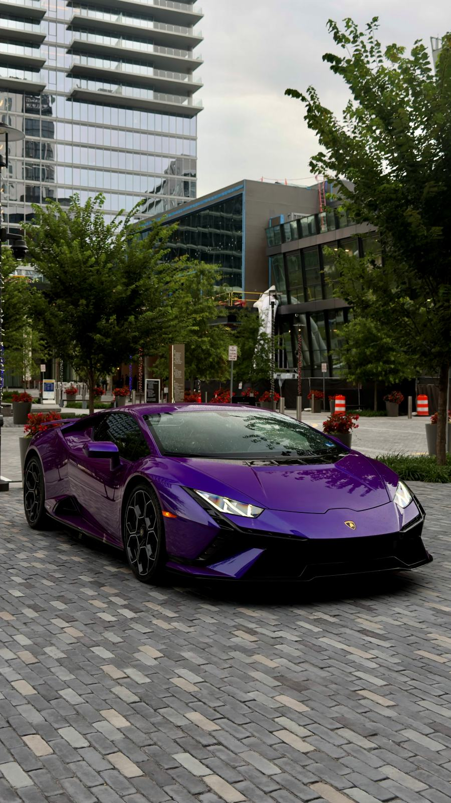

Huracán · Viola
- Value
- $295K
- Horsepower
- 602 HP
- 0–60
- 3.2 S
- Top speed
- 202 MPH
He’s been pointing these out through the windshield for years. Give him half an hour behind the wheel of a Lamborghini Huracán, on a guided scenic route through Maryland, DC, and Northern Virginia. You choose the experience. He picks the day.
We specialize in helping women create unforgettable moments for the men in their lives. A birthday surprise. An anniversary gift. A wedding gift. A “just because” moment. Or something he would never think to buy for himself.
Because the best reactions aren’t planned…they’re experienced.
Choose the experience you’d like to gift
Three tiers, each one including everything below it.
Three steps, and the rest is his
A few minutes at checkout. No date needed yet.
A physical gift card in the mail and a digital copy by email, both with his name on them. Hand it over however you like.
He calls with a date that works and we meet in Frederick. Come along — you’ll want to be there when he pulls away.
Awaiting safety paragraph — to run verbatim.
Not a bit. The pace car sets the speed, and the briefing before the drive covers everything he needs to know.
Please do. Spectators are welcome at the meeting point, and it’s the best seat for the moment he gets in.
Awaiting refund and expiry policy.
Two Huracáns
One Verde Mantis. One Viola. He tells us which one he wants when he books.

Awaiting pull quote 1 — real customer words, with a first name and town.
Awaiting pull quote 2 — real customer words, with a first name and town.
Choose the experience, and his card goes out today.
Gift the Experience